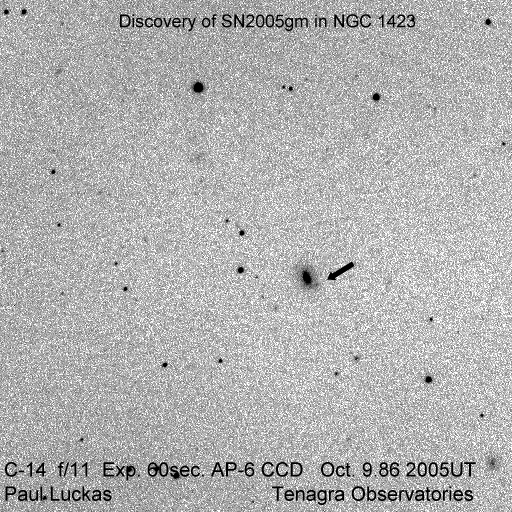

Our third discovery - a faint supernova in NGC1423.
(click on image for larger version)

Electronic Telegram No. 251 Central Bureau for Astronomical Telegrams INTERNATIONAL ASTRONOMICAL UNION M.S. 18, Smithsonian Astrophysical Observatory, Cambridge, MA 02138, U.S.A. IAUSUBS@CFA.HARVARD.EDU or FAX 617-495-7231 (subscriptions) CBAT@CFA.HARVARD.EDU (science) URL http://cfa-www.harvard.edu/iau/cbat.html
SUPERNOVA 2005gm IN NGC 1423 P. Luckas, Perth, W. Australia; O. Trondal, Oslo, Norway; and M. Schwartz, Patagonia, AZ, report the discovery of an apparent supernova (mag 18.0) on unfiltered CCD frames taken with the 0.35-m telescope at Perth on Oct. 9.86 UT and the 0.81-m telescope at Patagonia on Oct. 12.38 in the course of the Tenagra Observatory Supernova Search. SN 2005gm is located at R.A. = 3h42m39s.30, Decl. = -6o23'04".0 (equinox 2000.0), which is 12".5 west and 8".9 south of the center of NGC 1423 (which has position end figures 40s.14, 22'55".1). Nothing was visible at the position of 2005gm on an image taken by Schwartz on 2004 Oct. 16.31 (limiting magnitude about 19.0) using the 0.81-m Tenagra telescope at Patagonia.
Electronic Telegram No. 256 Central Bureau for Astronomical Telegrams INTERNATIONAL ASTRONOMICAL UNION M.S. 18, Smithsonian Astrophysical Observatory, Cambridge, MA 02138, U.S.A. IAUSUBS@CFA.HARVARD.EDU or FAX 617-495-7231 (subscriptions) CBAT@CFA.HARVARD.EDU (science) URL http://cfa-www.harvard.edu/iau/cbat.html
SUPERNOVAE 2005gm A spectrum of SN 2005gm (IAUC 8616), also obtained on Oct. 13.5 with SNIFS, reveals that it is a type-II supernova at an approximate redshift of z = 0.02, consistent with that of the host galaxy NGC 1423 (Theureau et al. 2005, A.Ap. 430, 373, via NED); the spectrum is well-developed, exhibiting H-alpha, He I 587.6-nm features, and the Ca II infrared triplet in emission.